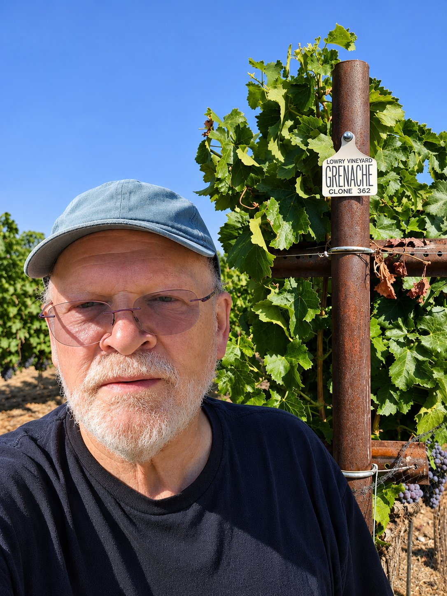

2024 Rogue Valley Grenache
Lowry Vineyard · Rogue Valley AVA · 13.6% ABV
A Different Side of Oregon
Our inaugural Grenache comes from Lowry Vineyard, perched approximately 1,500 feet above Oregon's Rogue Valley.
Here, Grenache reveals an elegant, expressive personality: pure red fruit, subtle baking spice, and a freshness that makes it as enjoyable on a summer evening as alongside a winter dinner.
It's a wine that reflects what first attracted me to Grenache—its ability to be generous without being heavy, complex without being complicated, and wonderfully versatile at the table.

At the Table
Try it with roast chicken, Thanksgiving turkey, grilled vegetables, savory grain dishes, or a selection of cheeses. On a warm afternoon, don't hesitate to give it a slight chill.
Discover Our Inaugural Vintage
Only 72 cases were produced - a genuinely small first chapter in the Seaport Cellars story.
- Local delivery: within about 10 miles of Portland (97214). A $10 delivery fee applies to three- and six-bottle orders; delivery is free on a case of twelve.
- Local pickup: 130 W Main St, Carlton, OR 97111, Mondays and Tuesdays by appointment. Email seaportcellarsllc@gmail.com or call 971-570-5442 to schedule.
- Adult signature (21+) required for all deliveries and pickups.